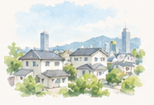

ご利用の流れ
はじめての方でも安心してご利用いただけるよう、丁寧にご案内します。

01ご相談
お電話・お問い合わせフォームからお気軽にご連絡ください。ご本人・ご家族はもちろん、主治医・ケアマネジャー様・相談支援専門員様からのご相談も承ります。

02ご面談・お打ち合わせ
担当者がご自宅などへ訪問し、現在の状況やご希望をうかがいます。サービス内容・利用料金・重要事項をご説明し、ケアの内容をご提案します。

03ご利用の準備
ご契約後、主治医からの訪問看護指示書をもとに訪問看護計画を作成し、関係機関との連携を行います。

04訪問開始
計画に基づき、訪問看護を開始します。定期的に訪問し、状態に合わせて内容を見直しながら継続的にサポートします。
対応エリア・営業時間
| 対応エリア | 神戸市・明石市 ※上記以外の地域はご相談ください |
|---|---|
| 営業日 | 月曜日〜金曜日 |
| 営業時間 | 9:00〜18:00 |
| 休業日 | 祝日・年末年始（12月30日〜1月3日） |


ひとりで抱え込まず、
まずはお気軽にご相談ください。
どんな小さなことでも構いません。
あなたやご家族の想いに、私たちが耳を傾けます。
今日より、
少しあたたかな明日へ。